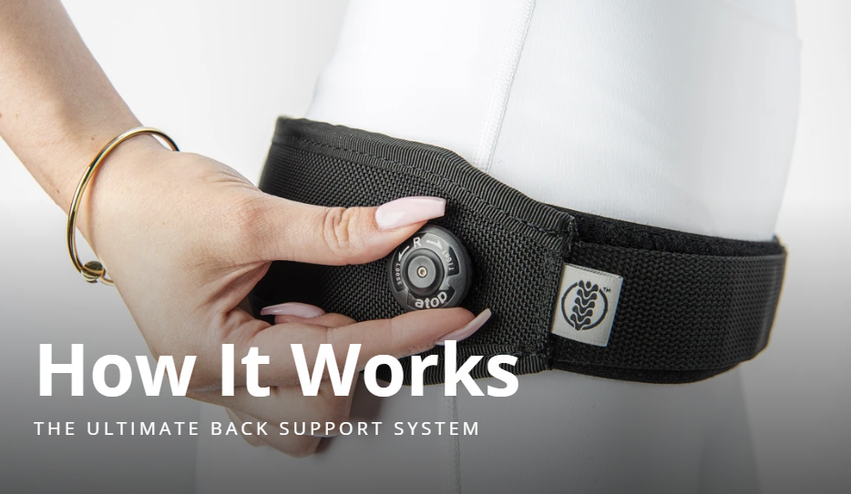
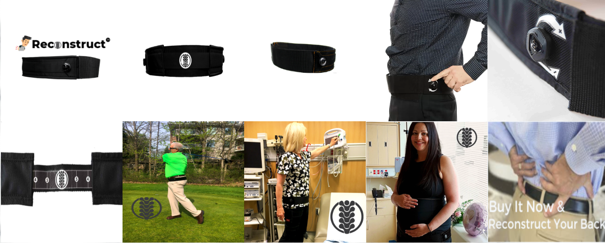

THE FITTING GUIDE
A closer look
at the dial.
The original project showcases a reel-based adjustment system and a step-by-step fitting video.

Explore the fitting system.
See how the belt is positioned and adjusted in the video used by the original project.
Watch the fitting video ↗Original video: Flourish.Creative on Vimeo.
PRODUCT GALLERY
